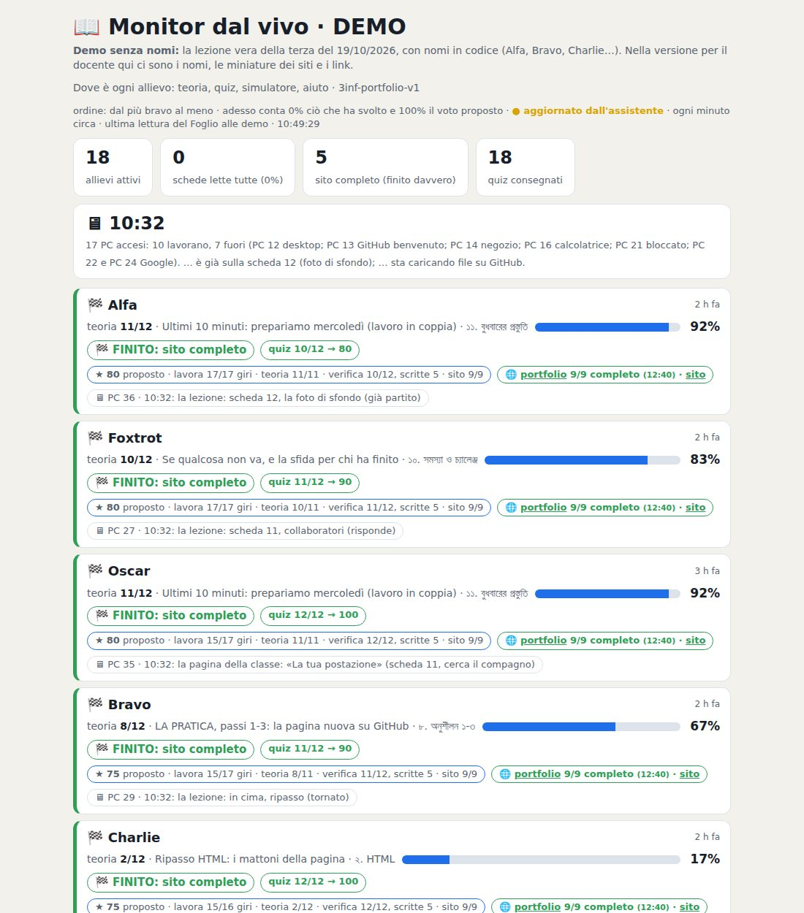

Il laboratorio di informatica secondo le idee di Nicola Regge
Una mattina con la terza
Lunedì 19 ottobre 2026, dalle 8:00 alle 10:50. Diciotto ragazzi, un sito internet a testa, e un cruscotto che fa vedere al prof tutta la classe in una pagina.
18ragazzi in aula
18verifiche consegnate su 18
5siti completi, controllati sul sito vero
17giri di controllo dello schermo
Che cosa dovevano fare
Ogni ragazzo ha già un suo sito, pubblico, fatto da lui. Oggi doveva aggiungere una pagina che si chiama «Cosa so fare»: le cose che sa fare davvero, scritte come le direbbe a un'azienda che lo prende in stage. È il suo biglietto da visita.
Come è andata, ora per ora
8:00
I ragazzi aprono la lezione: una pagina sola, che li guida un passo alla volta. Il prof dà il via e firma il registro.
8:45
Il cruscotto mostra subito chi è partito e chi no. In pochi minuti metà classe ha letto tutte le schede: ma leggere non è fare.
9:00
Il controllo automatico guarda i siti veri: solo uno ha la pagina online. Il prof lo dice alla classe con una frase sola, e i ragazzi tornano a lavorare.
9:30
Tre siti completi. Chi si blocca scrive all'assistente in fondo alla pagina e riceve la risposta in un paio di minuti, con i passi giusti per lui.
10:00
Metà classe ha consegnato la verifica. Chi è sotto la sufficienza ha già il recupero aperto, senza aspettare nessuno.
10:20
Diciotto verifiche su diciotto. Per chi ha finito arriva una sfida in più: mettere una foto di sfondo al proprio sito.
10:45
I voti sono pronti per il registro, ognuno con il suo conto: quanto ha lavorato, che cosa ha fatto, com'è il suo sito.
Il cruscotto del prof
Una riga per ragazzo. Che cosa sta facendo adesso, che cosa ha fatto, che cosa gli manca, che domanda ha fatto e che risposta ha avuto. La bandiera a scacchi 🏁 compare solo quando il lavoro è finito davvero, controllato sul sito vero. In cima, i più bravi.

Il cruscotto della mattina, con i nomi sostituiti da nomi in codice (Alfa, Bravo, Charlie…).Apri il cruscotto in demo
Perché funziona
Il prof non controlla le pagine: guarda la classe. Va di persona da chi è fermo. Tutto il resto lo fa la pagina della lezione, con l'assistente che risponde e un controllo che dice a ognuno che cosa gli manca.
Chiedere aiuto conta. Nel voto vale di più chi ha chiesto e poi ha fatto: chi non fa e non chiede è chi resta più indietro.
Ognuno vede la sua situazione. Il ragazzo ha la sua pagina «Il mio punto», con le cose fatte e le cose che mancano: si regola da solo.
Mercoledì gli stessi ragazzi lavoreranno in coppia: ognuno scriverà una pagina nel sito del compagno, come in un'azienda vera.